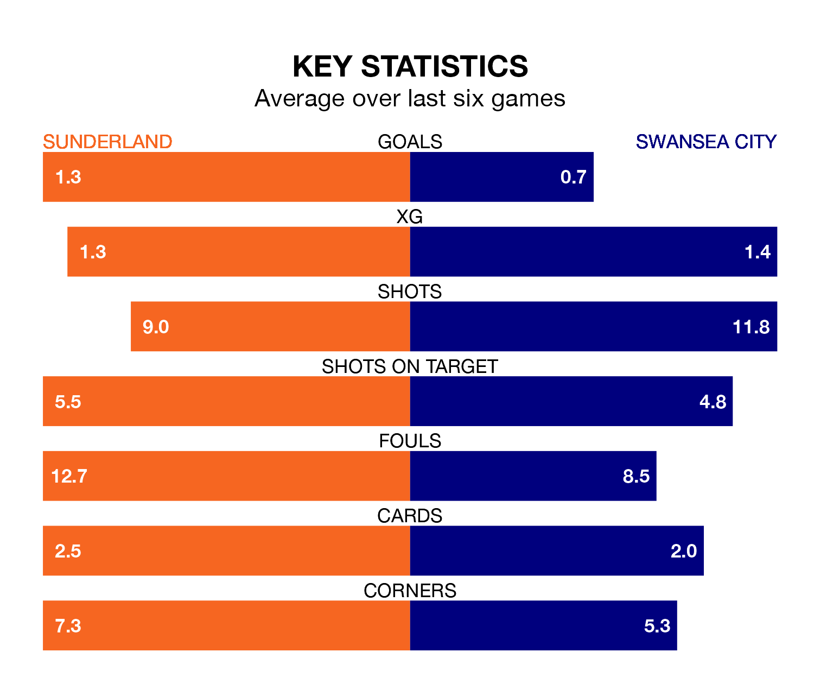

Swansea City come to the Stadium of Light to play Sunderland on Saturday in poor form, having collected just three points from their last six games.
The visitors have won just one of their last six fixtures, while the Black Cats have two wins and a draw.
In the last 10 years, Sunderland and Swansea have played each other on 10 occasions. Sunderland won one of them, Swansea five, and they drew four times.
On average, the Black Cats scored 0.9 goals and the Swans 1.7 in those matches.
Their last meeting was on November 4, when they played out a 0-0 draw.
In Jack Clarke, Sunderland have one of the league's most on-form strikers so far this season. He has notched 15 goals in 33 appearances, to sit fourth in the scoring charts.
His goal rate of one every 195 minutes is slightly quicker than that of Joël Piroe, Swansea's top scorer with a goal every 213 minutes, and a total of 11 goals in 32 games.
With 41 goals in 33 games so far this season, City are scoring at below the league average rate with 1.2 goals per game. And they are conceding more than average, letting in 54 goals at a rate of 1.6 per game.
The Black Cats, meanwhile, are average scorers, with 1.4 goals per game. They have conceded 1.1 goals per game.
The Swans are 18th in the table after 33 games, of which they have won nine and drawn nine, earning 36 points.
The hosts are eight places ahead of the away team in 10th, with 14 wins and five draws putting them on 47 points.
Sunderland's last match was on February 17, a 2-1 loss against Birmingham City, with Jack Clarke getting the goal for the Black Cats.
Swansea lost 2-1 against Ipswich Town last time out, also on February 17, with Jerry Yates on the scoresheet.
Updated: 12:18 (UTC), 19/02/24